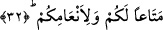

32. (Bütün bunlar) sizi ve hayvanlarınızı yararlandırmak içindir.
Bu ifâde, yukardan beri sıralanan hâdiselerin sebebini bildiren mef’ûlün lehdir. Buna
göre ifâdeyi takdir edip yeniden anlamlandıracak olursak şöyle deriz: Allah Teâlâ bütün
bunları sizleri ve hayvanlarınızı nimetlendirmek için yapmıştır. Çünkü yukarda sayılan
nimetlerden bazıları insanların yemekleri, bazıları da hayvanlarının yemleridir. İfadenin
akışı buraya kadar üçüncü tekil şahıs kipinde akıp gelirken bu son ifâdede birden bire
insanlara yönelinmekte ve birinci çoğul şahıs yapılarak “sizin ve hayvanlarınızın”
ifâdesi kullanılmaktadır. Bu sebebsiz değildir. Böyle yapılmakla Allah Teâlâ’nın
insanlara vermiş olduğu nimet daha mükemmel bir biçimde hatırlatılmaktadır.
Bu âyette, muhabbet-i zâtî habbına/tanesine, ‘inebu’s-sıfattan/sıfatların üzümünden
elde edilmiş saf muhabbete, yaş hurmadan yapılmış muhabbet-i ef’aliye hamuruna,
mârifet zeytununa, hiçbir yalancının ve iddiâcının erişemeyeceği tevhid hurmasına,
vicdaniyyat ve zevkıyyat meyvesine, şevk, iştiyak, vüdd/sevgi, tecrid vb. bahçelerine,
şehevat-ı hayvaniye otlaklarına işâret vardır. Bu şerefli nimetlerin ervah, esrar ve kulub
gibi bazıları havassa; nüfûs-ı beşeriye ve unsurî tabiat kuvvetleri gibi bazıları da avama
âiddir.
[20]. Münâvi, II, 522.
[21]. Bk. Tirmizi, Etime 43.
[22]. Aclûni, I, 458.